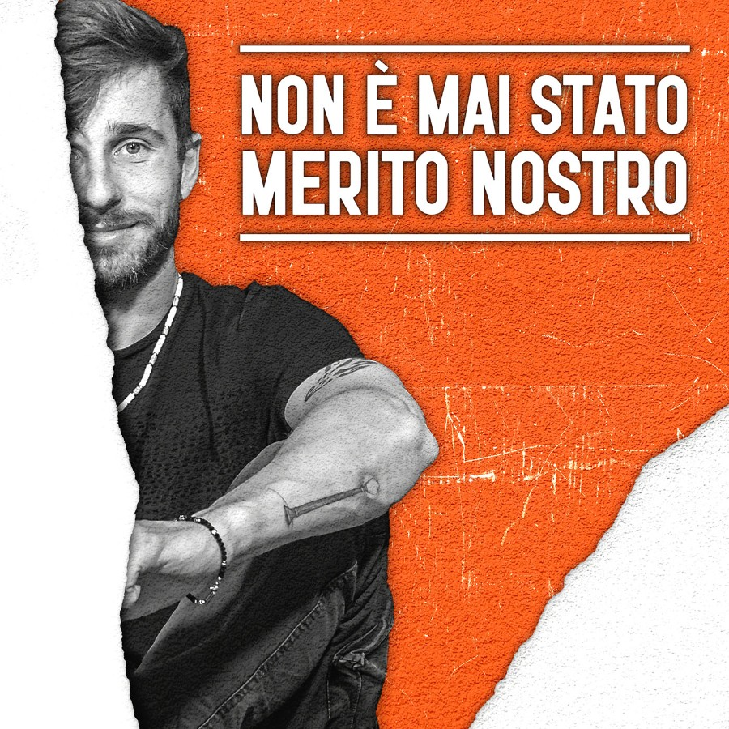

I podcast di chi mi ha scelto
Progetti realizzati per autori, aziende e professionisti.

Generazione Europa
Il podcast di 20e30 in collaborazione con l’ufficio del parlamento europeo in Italia e la Rappresentanza della commissione europea con la media partnership di CnC Media.
Scopri →
È il sesso, bellezza!
Il podcast dell’attrice e performer di burlesque Giulia di Quilio, dove affronta il tema del sesso e della sessualità abbattendo ogni tabù.
Scopri →
Legal For Digital Podcast
Il podcast degli avvocati Brunella Martino (avvocatodellarete) e Alessandro Vercellotti (avvocatodeldigitale) nato per rendere accessibile il legal tech a tutti i professionisti del web.
Scopri →Lavoraci Su
Lavoraci Su
Il podcast di Annalisa Carrera alla scoperta del motivo per cui si fa il lavoro che si sta facendo.
Scopri →
Non è mai stato merito nostro
Podcast traddo dal libro omonimo di Samuele Viganò.
Scopri →